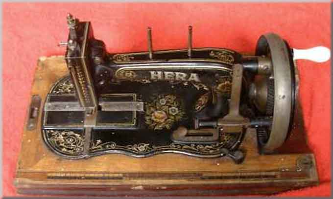
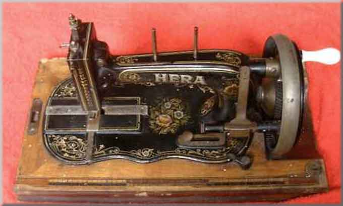

Winselmann
Maker: Winselmann
Model: Hera
Serial #: ?
Date: ?

©
Alan Quinn 2001
Pictures posted on this page may not be reproduced or distributed in part or in whole without the prior written permission of the relevant copyright owner


Pictures posted on this page may not be reproduced or distributed in part or in whole without the prior written permission of the relevant copyright owner